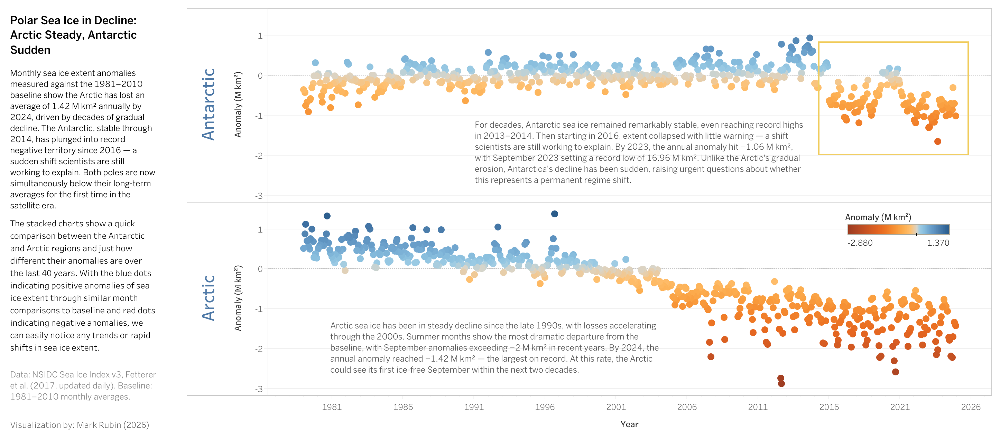

Polar Sea Ice in Decline: Arctic Steady, Antarctic Sudden
Visualizing 45 years of polar sea ice loss through monthly anomalies
View Dashboard →
The Situation
Both polar ice caps are losing ice — but in fundamentally different ways. The Arctic has been in slow, steady decline for decades. The Antarctic held stable for years, then collapsed almost overnight. How do you show both stories in a single view that makes the contrast unmistakable?
What I Created
A stacked dual-panel dot plot comparing monthly sea ice extent anomalies at both poles from 1979 to 2024, measured against the 1981–2010 climatological baseline.
1 · Antarctic Panel (Top)
Monthly anomalies show decades of stability, with dots hovering near or above zero through 2014. Then a dramatic plunge: starting in 2016, the dots shift decisively into negative territory. A highlighted annotation box draws attention to the post-2016 regime shift, where September 2023 set a record low of 16.96 M km². Scientists are still debating whether this represents a permanent structural change in Antarctic sea ice behavior.
2 · Arctic Panel (Bottom)
A textbook climate signal. Blue dots (positive anomalies) dominate the early record, gradually giving way to an unmistakable sea of dark red by the 2010s and 2020s. The descent is steady and relentless — no recovery, no reversal. By 2024, the annual anomaly reached −1.42 M km², the largest on record. Summer months show the most extreme departures, with September anomalies exceeding −2 M km².
3 · Diverging Color Scale
A shared blue-to-red color encoding (ranging from −2.88 to +1.37 M km²) allows instant visual comparison. Blue dots represent months with more ice than the baseline average; red dots represent months with less. The color gradient turns the raw numbers into an intuitive visual language — and the overwhelming shift from blue to red across both panels tells the story at a glance.
Why It Matters
Polar sea ice is a critical indicator of global climate health. Arctic ice loss accelerates warming through reduced albedo, while Antarctic ice instability carries implications for global sea level rise. These visualizations give researchers, educators, policymakers, and journalists an immediate understanding of the pace and pattern of change at both poles — and the alarming fact that both are now simultaneously below their long-term averages for the first time in the satellite era.
The Arctic's decline is a slow erosion that's been building for decades. Antarctica's collapse came fast and without warning. Together, they show that polar ice loss is no longer a single-hemisphere problem — it's a global one.
Detailed Project Overview
Create a comparative polar sea ice monitoring dashboard that visualizes monthly extent anomalies for both the Arctic and Antarctic, revealing contrasting decline patterns and enabling side-by-side analysis of long-term climate trends at both poles.
Analyze 45 years of satellite-derived monthly sea ice extent data (1979–2024) from the NSIDC Sea Ice Index, calculating anomalies against the standard 1981–2010 climatological baseline for both hemispheres.
Key Visualization Aspects
- Stacked Dual-Panel Layout: Vertically aligned scatter plots with a shared x-axis (Year) and matching y-axis scale (Anomaly in M km²), enabling direct visual comparison between Antarctic (top) and Arctic (bottom) trends
- Diverging Color Encoding: Blue-to-red color scale mapped to anomaly values, providing an immediate visual signal of whether each month is above or below the long-term baseline
- Contextual Annotations: Region-specific narrative text placed within each panel explaining the key findings, trend onset dates, and record values — making the dashboard self-contained and readable
- Highlighted Regime Shift: An annotation box on the Antarctic panel draws attention to the post-2016 collapse, the most significant and unexpected finding in the data
Value & Impact
Accessible, visually intuitive tool for communicating complex polar ice trends to non-technical audiences
Side-by-side comparison revealing the fundamentally different decline mechanisms at each pole
Documents the unprecedented simultaneous decline at both poles, supporting evidence-based climate policy
Self-contained dashboard with embedded methodology and citations suitable for classroom engagement
Key Metrics
Challenges & Solutions
Comparing Two Regions with Different Ice Behaviors
Arctic and Antarctic sea ice follow opposite seasonal cycles and have fundamentally different baseline magnitudes. Showing raw extent values side by side would obscure the trend signal behind seasonal noise and scale differences.
Solution: Calculated monthly anomalies against each region's own 1981–2010 baseline, normalizing both datasets to a common "departure from normal" metric. This strips out the seasonal cycle and scale differences, making the two poles directly comparable on a shared y-axis.
Conveying Both Gradual and Sudden Change
The Arctic story is a slow decline over 25+ years. The Antarctic story is a sudden collapse in under a decade. A single visualization approach risks emphasizing one narrative at the expense of the other.
Solution: Used a stacked vertical layout with identical axis scales so the viewer's eye naturally moves between panels and registers the contrast. Targeted annotations within each panel explain the specific pattern without requiring the viewer to interpret the data unaided.
Making 1,100+ Data Points Readable
With 552 monthly anomalies per pole, visual clutter was a real risk. Traditional line charts at this density become noisy and hard to parse.
Solution: Used a dot plot (scatter) approach rather than connected lines, allowing each month to stand as an individual data point. The diverging color scale does the heavy lifting — the viewer doesn't need to trace a line, they just see the field of color shift from blue to red over time.
Technical Achievement
- Anomaly Calculation Pipeline: Computed 1981–2010 monthly baselines (12 values per pole) from raw extent data, then derived 552 monthly anomalies per hemisphere
- Tableau Visualization Design: Dual-panel scatter plot with synchronized axes, diverging color palette, and embedded annotations achieving a high information-to-ink ratio
- Data Storytelling: Strategic use of color, layout, and annotation to guide the viewer through two distinct climate narratives within a single cohesive dashboard
This project demonstrates the ability to transform complex, multi-decadal satellite datasets into a clear comparative narrative, using anomaly analysis, strategic color encoding, and editorial annotation to communicate two distinct but interconnected polar climate stories within a single dashboard.
Data Sources
Sea Ice Extent Data
Source: NSIDC Sea Ice Index, Version 3 — Fetterer, F., K. Knowles, W. N. Meier, M. Savoie, and A. K. Windnagel (2017, updated daily)
Anomaly Calculation
- Baseline Period: 1981–2010 (standard NSIDC climatological reference, 30-year average)
- Method: For each of the 12 calendar months, computed the mean extent across the 30 baseline years. Each individual monthly observation was then expressed as a departure from its corresponding monthly baseline value.
- Result: Positive anomalies (blue) indicate more ice than the 1981–2010 average; negative anomalies (red) indicate less ice